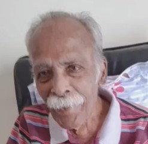
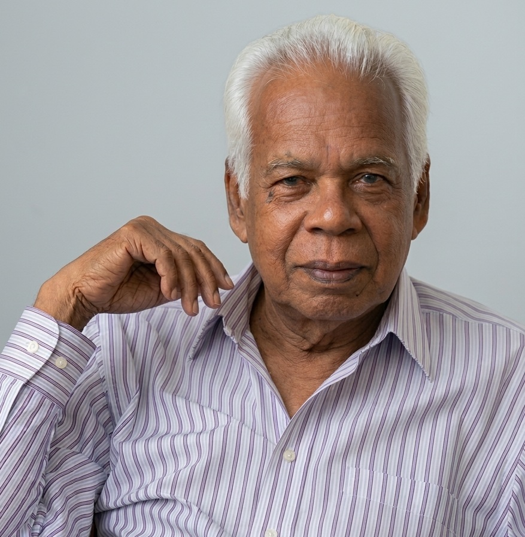
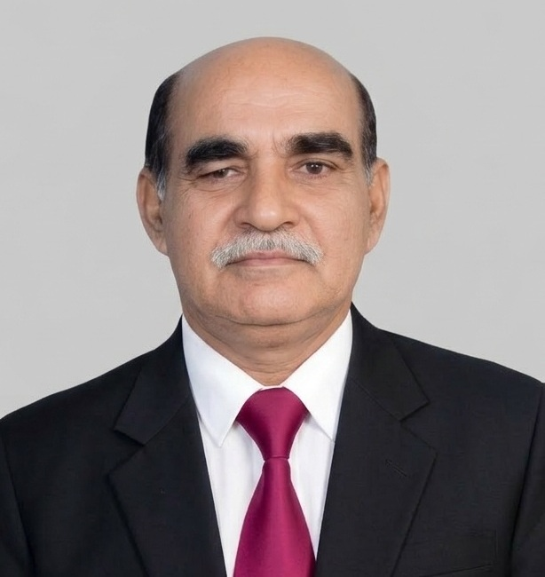
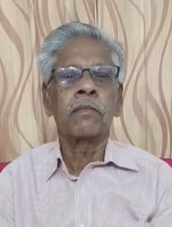
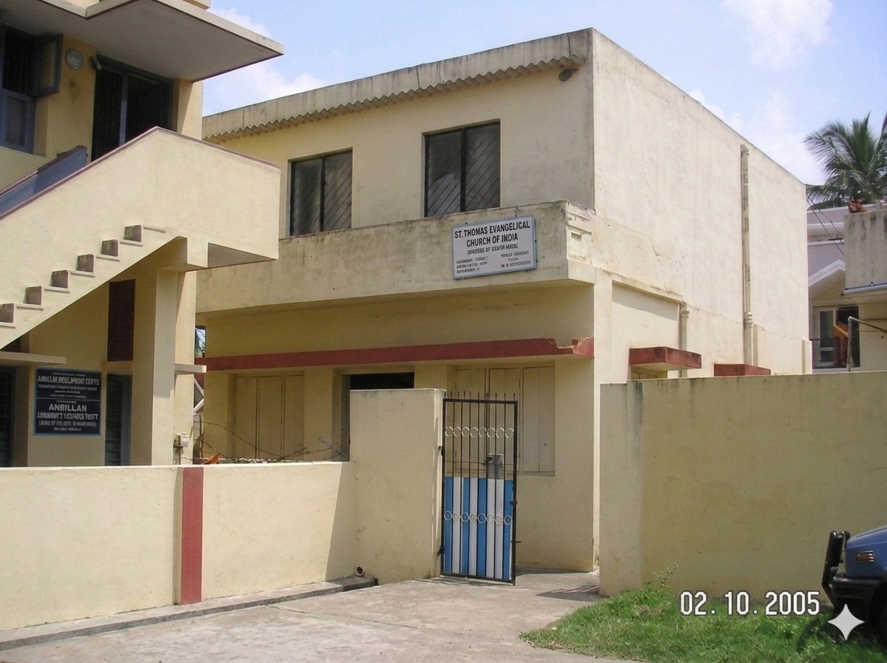
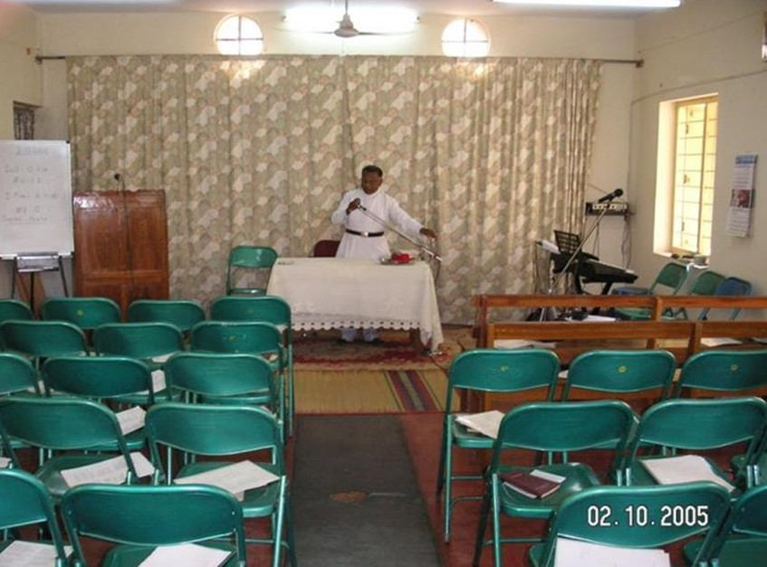
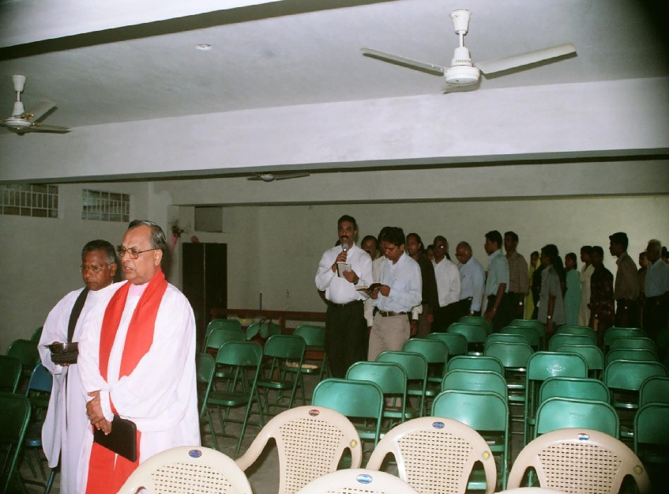
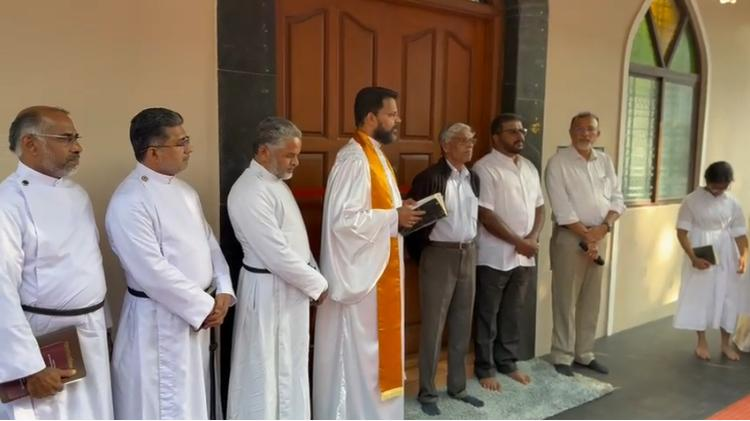
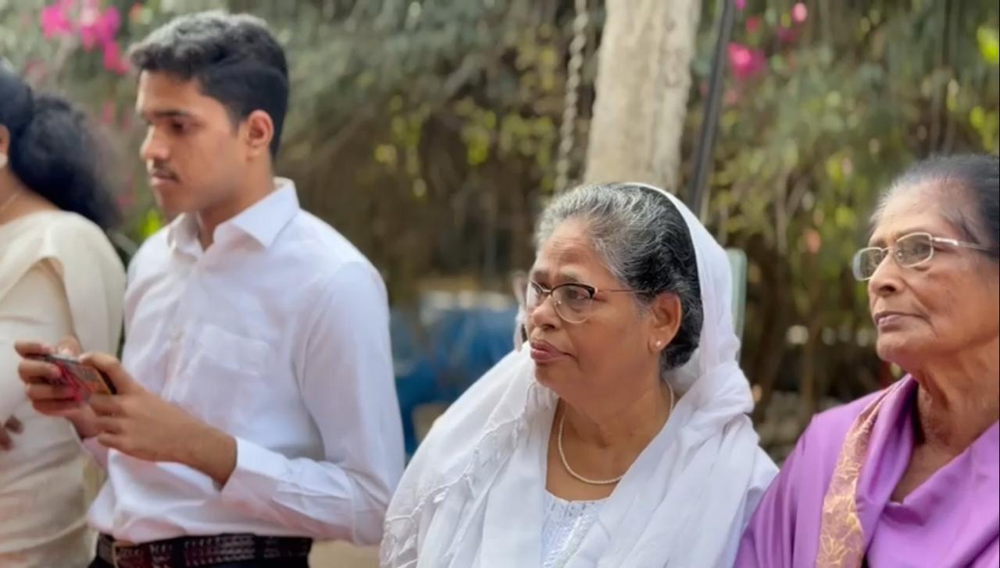
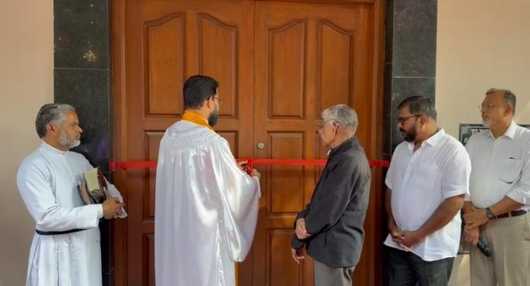

Brief History of Bangalore Parish |
STECI History
St. Thomas Evangelical Church of India (STECI) originated from the Mar Thoma Syrian Church with the objective of reconstituting the church according to its founding principles. The STECI was launched at Thymala, Manjadi, Thiruvalla, Kerala, India on Jan 26, 1961.
The Malankara Mar Thoma Syrian Church formally came into existence in 1889 after losing the ‘Seminary Case’ or Royal Court Case against the Jacobite Metropolitan Mar Dionysius. The rift with the Jacobite Metropolitan began after 12 clergymen of the reformed faction of the church under the leadership of Abraham Malpan declared opposition to 24 non-biblical evil practices in the Malankara Church on 5th Sept. 1836. This development was the result of a great reformation that was triggered by the Church Missionary Society and the reformation movement led by Abraham Malpan and Kaithayil Gee Varghese Malpan in 1826.
Based on Biblical teachings, they gave up beliefs and practices contrary to the Word of God that was proclaimed by St. Thomas (one of the Apostles of Jesus Christ who landed in Cranganore, near Cochin in 52 A.D. according to tradition). Within four decades of the formation of the Mar Thoma Church, led by a section of leadership, the Mar Thoma Church started deviating from its reformed faith, doctrines and practices, and became lenient to non-Biblical practices.
Therefore, another Reformist Forum was started by Mr. K. N. Daniel, a lay theologian and activist in 1929. Abraham Mar Thoma Metropolitan was supportive of him until his demise in 1947. However, the drifting from reformist positions continued. It is in this context that on October 29, 1952, the Pathyopadesa Samithi, Forum to Defend Sound Doctrine, was formed. Under the able leadership of Mr. K. N. Daniel, they raised their voices within the church against the drifting away of faith for about a decade.
When this became futile and impossible, the reformed section of the Mar Thoma Church decided to reconstitute the Mother Church under the name St. Thomas Evangelical Church of India in 1961 to retain and continue the reformation. These facts are mentioned in the preamble of the constitution of the STECI.
🌿The History of Bangalore Parish (1964–2025)
Humble Beginnings (1964–1979)
The Bangalore Parish traces its origin to the deep desire of Sabha members to gather in fellowship wherever Providence placed them. In 1964, at Berian Bible College, Mr. Rajan Abraham and Mr. Varghese Tenali initiated a prayer group that soon drew others—Mr. P.V. Alexander, Mr. M.J. Thomas, Mr. P.D. Varghese, and Mr. M.J. Mathai. These men are remembered today as the Founding Pillars of the parish.

Late Mr. Alexander

Late Mr. M. J. Thomas

Late Mr. P.D. Varghese

Mr. M. J. Mathai
For fifteen years, worship was nomadic, moving from the India Crusade Workers Hostel under Mr. P.K. Koruth’s leadership, to the Hindustan Congregation Parish Hall at Infantry Road (Vishranthi Nilayam Campus), and even to the homes of faithful members such as Mr. V.M. Mammen and Dr. M.M. Ninan. In 1975, land was purchased at Lingarajapuram, laying the foundation for a permanent sanctuary.
The First Church Building (1980–2004)


The parish matured into a hub of faith: in 1981, under Rev. T. C. George, it hosted the Bahya Kerala Diocese Conference for the first time. In 1984, under Rev. Thomas Abraham, it hosted the Bahya Kerala Diocese Conference for the Second time. Rev. Thomas Varghese emphasized nurturing the young, establishing the Sunday School. The parish hosted the conference again in 1992 under Rev. Thomas Varghese, and continuing the passion to bring the believers from Bahya Kerala Diocese, parish hosted the conference on fourth time in 2004 lead by Rev. K. S. James. This era cemented Bangalore Parish as a spiritual anchor for diaspora believers
Expansion and New Foundations (2005–2007)



In 2006, Bishop Dr. M.K. Koshy dedicated the basement, which served as the worship space until completion of parish building. On March 24, 2007, the church building construction was completed under the supervision of Rev. Biju Thomas, and the new church was consecrated by Presiding Bishop Most Rev. T.C. Cherian. Bishop Dr. M.K. Koshy, Rev. Dr. Thomas Varghese, Rev. John V. John, Rev. Titus, Rev. David P. Varghese, and Rev. K.S. James were present on this historic day.
Mission initiatives flourished: Karnataka Jyothi (2006), initiated by Rev. Biju Thomas, expanded worship groups in Ambedkar Nagar, Adur, Pagathi Nagar, and Bannerghatta. Rev. Puttaswamy coordinated the mission, later succeeded by Br. Radhakrishnan.
In 2007, a parsonage was constructed under Rev. Thomas Tottathil, located next to the church, providing a dignified and convenient residence for the Vicar and family. This ensured pastoral care could be offered with greater stability and presence.


Growth and New Initiatives (2008–2025)
The parish continued to evolve with vision and compassion.
Parish members continued to attend worship services faithfully, even though many had to travel long distances. Their perseverance was driven not by convenience, but by their love for Christ and their steadfast support of the St. Thomas Evangelical Church of India. Over time, however, the parish recognized that building churches closer to the homes of families would allow for easier access to worship and greater participation. Thus, in 2008, a group of families branched out to form the Koramangala Parish, ensuring that the growing community could worship with less burden of travel while remaining united in faith.
In the initial days, worship services were attended primarily by believers who had migrated from Kerala to Bangalore. As the years passed, many of these families began to settle permanently in this beautiful city. A new generation was born and raised here, and unlike their parents, their fluency in the Malayalam language was limited. Educated in English-medium schools, English naturally became their first language.Recognizing this shift, and with a vision to serve the younger generation more effectively, the parish introduced an English worship service in 2009 under Rev. P.M. Joseph. This initiative ensured that the spiritual life of the community remained vibrant and accessible, bridging tradition with the evolving linguistic and cultural identity of its members.
The 33rd Bahya Kerala Diocese (BKD) Conference of the St. Thomas Evangelical Church of India was held from October 23–26, 2014, at Claret Nivas, Bangalore, hosted by the Bangalore Parish under the leadership of Rev. Shaji Alexander. Sabha leaders and prominent servants of God led various sessions, offering deep spiritual insights and guidance to the gathered faithful.
As the parish continued to emphasize mission-oriented work, an evangelistic Christmas Carol Service was held on 9th December 2018 under the leadership of Rev. Moncy Varghese. The special purpose of this gathering was to create a platform through which the message of salvation could be introduced into the lives of unbelievers. This event not only reflected the parish’s commitment to outreach but also demonstrated its heartfelt desire to share the hope of Christ with the wider community.
On September 3, 2021, it was officially registered as a Public Religious and Charitable Trust.
On 14 July 2024, a new prayer hall was dedicated in Bellary mission field under Rev. Laji Varughese. And on 4 August 2024, a utility complex with parking facilities was inaugurated.
Participation in the Sabha’s Urban Mission, leading to the formation of STECI City Serve Fellowship (CSF). On February 21, 2025, CSF officially recognized by the Church Council under Rev. Varghese John.



Later that year, under the leadership of Rev. Laji Varughese, the church underwent a significant renovation—the first major interior transformation since the construction of the new building in 2007. For nearly two decades, the sanctuary had remained unchanged, faithfully serving the parish. Yet, the elders discerned the need for renewal, voicing their desire to replace the plastic chairs with traditional wooden benches. This change not only honored the heritage of historic churches but also provided greater convenience and capacity for the growing congregation.
Alongside this, the pulpit and altar were carefully redesigned and beautified, reflecting both reverence and aesthetic grace. The interiors were reimagined to embody the sanctity of worship, blending heritage with modern sensibilities. On December 21, 2025, thanks giving prayer offered by Rev. Laji Varughese and resumed the worship in the renovated santury. The occasion symbolized a bridge between past and future—preserving tradition while embracing renewal—so that the church might continue to inspire generations in the beauty and presence of God.



✨ Legacy and Vision
From six believers in a Bible college room to a thriving, multi-lingual parish with missions in Bellary and beyond, the Bangalore Parish stands as a living testimony to faith, fellowship, and perseverance.
It is not merely a record of land and buildings, but a spiritual epic—proof that “The Lord has done great things for us, and we are filled with joy” (Psalm 126:3). Today, the parish shines as a beacon of hope, carrying forward the legacy of its pioneers into a purposeful future.